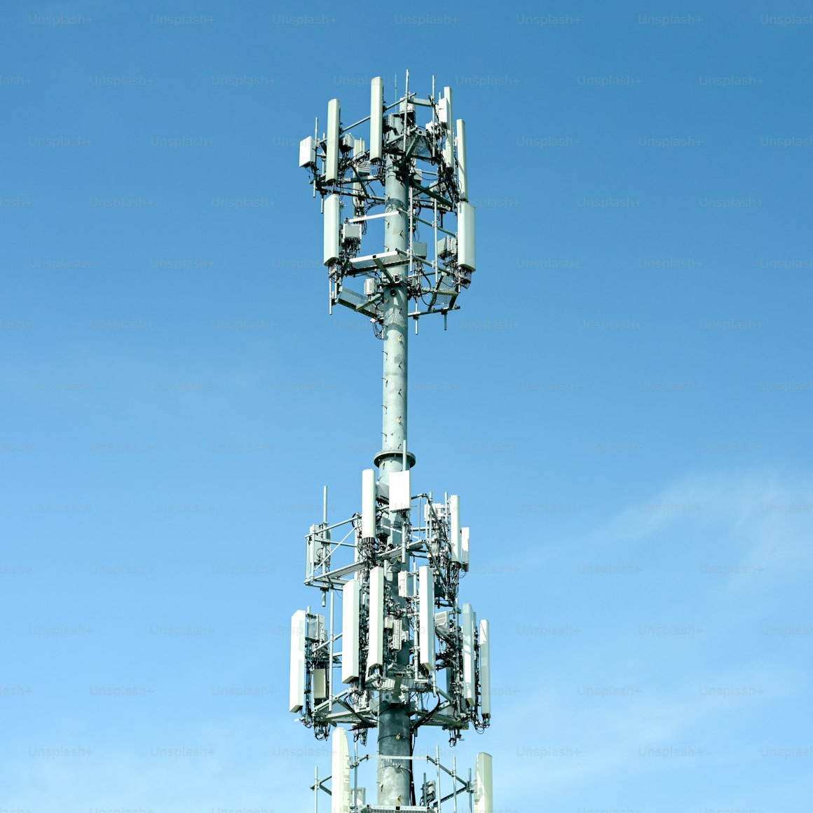

Led network performance audit, optimization, and feature evaluation programs across multiple Latin American operator networks, including Huawei 2G, 3G, and multi-vendor environments. Directed teams of senior RF engineers, performed advanced RF capacity and performance analysis, worked directly with customer technical and executive stakeholders, and delivered optimization strategies that improved network performance while supporting service promotions, technology adoption, and competitive business opportunities
Directed a major network performance assessment and optimization engagement for Telcel's Ericsson W10.1.3 and P7.1 RNC networks in Mexico. Recruited and built a team of senior RF engineers to help through detailed analysis, developed executive-level recommendations, and presented findings to the CTO and senior leadership, resulting in customer approval for implementation and contributing to Huawei's successful expansion within Telcel and subsequent LTE business wins
Played key role in LTE planning and simulation initiatives supporting network design, KPI validation, and customer negotiations. Developed advanced propagation, capacity, and coverage models using Asset and U-Net, guided path loss model tuning through drive testing, advised planning teams on link budgets and antenna selection, and created optimization guidelines covering mobility management, idle mode behaviour, paging, and network capacity planning
Established and led Huawei's multi-vendor network performance management by recruiting senior engineers with Ericsson and Nokia/NSN expertise and developing comprehensive troubleshooting and optimization methodologies. The project produced a broad technical knowledge base, for network planning and optimization in multi-vendor platforms and consulting support for international operators managing complex multi-vendor radio access networks
Developed sophisticated analytical models and optimization methodologies to improve network capacity planning and operational efficiency. The work included mathematical modelling of code utilization and blocking probabilities, congestion analysis for large-scale operator networks, and recommendations that optimized infrastructure investments, avoiding unnecessary network expansion costs while improving capacity management
Provided strategic technical consulting to Huawei R&D on the evolution of self-organizing and self-optimizing network capabilities for future UMTS platforms. Researched and Defined SON feature concepts, optimization algorithms, and tool enhancements that influenced product roadmaps, with several proposed capabilities progressing into laboratory trials and subsequent commercial software releases
Defined detailed test strategy and plans, led the project and team on resolving technical issues within the team and with the client, handled equipment requirements and configuration issues with vendors, defined the methodology for analysing the test data and generated presentations and reports and presented to CTO and middle management, and managed the day-to-day logistics of the project execution with a team of 6 engineers to help meet the client requirements and the deadlines
Designed and implemented comprehensive UMTS network performance measurement and analytics frameworks using Business Objects on ENIQ (Web Intelligence). Developed standardized KPI dashboards, statistical analysis templates, and management reporting capabilities that enabled routine network health assessment, rapid identification of performance issues, and detailed root cause analysis to support ongoing network optimization
Led technical performance optimization initiatives for UMTS, HSDPA, and GPRS/EDGE networks across multiple operator engagements. Analysed network performance data, identified capacity, interference, mobility, and throughput issues, and recommended parameter tuning, feature activation, and capacity planning strategies that delivered significant improvements in service quality, call performance, and data throughput, including major throughput gains for Telefónica Mexico
Led the definition and standardization of UMTS performance indicators, KPI formulas, algorithms, and measurement methodologies for newly deployed 3G networks. Developed the functional specification for a next-generation network performance analysis platform, expanding its analytical capabilities and establishing a standardized performance management framework intended for deployment across América Móvil operations Customer Technical Training & Operational Support/Ericsson/Mexico/Russia/2008-2009
Provided customer mentoring, engineering workshops, and executive presentations on network performance analysis and optimization methodologies. Trained operator engineering teams on performance management processes, reporting standards, troubleshooting techniques, and optimization best practices while providing ongoing advisory support to radio optimization teams reviewing network performance and implementing improvements
Led the definition and refinement of key performance indicators (KPIs), performance indicators (PIs), formulas, and measurement methodologies for evaluating customer experience, network efficiency, and operational performance
Directed initiatives to improve radio network quality, capacity, and operational stability through advanced performance analysis, parameter optimization, and targeted field trials. Led investigations into persistent network issues, including BTS frequency synchronization and stability, introduced improved synchronization strategies, optimized power control, evaluated radio features and site re-engineering options, and implemented traffic management techniques across subcell structured multi-band radio network through analysis of spectral and hard capacity utilizations that increased network capacity while improving voice quality and overall service performance
Developed standardized methodologies and efficient engineering processes for radio performance analysis, problem classification, troubleshooting, and optimization. Led the network performance team while mentoring local engineers in advanced optimization techniques, root cause analysis, testing methodologies, and performance engineering best practices, strengthening the organization's long-term technical capability
Led the definition and refinement of GSM and GPRS network KPIs, performance indicators, and implementation formulas, obtaining customer approval for standardized performance measurement methodologies. Conducted advanced analysis of SDCCH signalling congestion, network accessibility, and related counters, developing improved performance indicators and analytical models that enhanced the functionality of the Smart network performance analysis tool deployed across América Móvil operations
Developed standardized engineering procedures for new site acceptance testing, RF optimization, UMTS site planning, and GSM/UMTS co-location. Produced site preparation guidelines, preliminary link budget methodologies for voice and data services, and guided the cell design, parameter planning, new-site optimization, and 3G coverage estimation using the NetAct radio planning tool for América Móvil network deployments
Mentored RF optimization engineers and technical managers in advanced radio network planning, optimization methodologies , and operational best practices. Designed and delivered multi-day technical training programs covering radio network planning, RF optimization, KPI interpretation, link budgeting, and performance engineering, strengthening customer engineering capability and supporting successful deployment and optimization of GSM networks
Served as a technical advisor on the UMTS vendor evaluation committee, supporting the assessment and selection of radio access network (RAN) equipment for network deployment. Participated in technical discussions with prospective vendors, evaluated equipment capabilities, performance, and feature sets, challenged technical proposals, and provided recommendations that guided vendor selection and procurement decisions
Developed engineering methodologies, planning guidelines, and analytical tools to support UMTS network design, deployment, and optimization. Designed flexible link budget models for coverage and capacity analysis, including HSDPA services, developed UMTS antenna integration solutions for GSM co-location scenarios, and established pre-launch optimization guidelines to improve network performance
Designed advanced methodologies for post-processing inter-cell interference measurements collected through Ericsson BSS FAS features to support UMTS overlay design. Developed techniques for identifying pilot pollution, dominant interferers, and coverage issues, while leading the development of UMTS field trial plans, performance measurement strategies, and validation processes for network deployment and optimization
Designed and implemented a structured GSM network performance management framework, including weekly KPI reporting, performance tracking, trouble ticket analysis, and routine RF optimization processes
Led drive test teams in collecting rf signal measurements, call drop and handover failure measurements in Jakarta, Bali, Lombok, and Solo and later in analyzing the measurements using Team Investigator for root cause analysis and recommending site re-engineering and BSS parameters and feature re-confirgurattion to reduce call drops and improve call quality.These initiatives resulted in up to 52% reduction in call drop rates in some areas such as the VIP visited regions
Developed traffic models and capacity analysis methodologies to evaluate multi-layer GSM network utilization and optimize traffic distribution across network layers. Used traffic and interference analysis results to guide parameter settings, congestion management strategies, and operational thresholds, while designing spectrum-efficient BCCH and TCH frequency plan revisions for 900 MHz and 1800 MHz bands to mitigate i nterference and improve capacity
Developed innovative methodologies for improving in-building coverage by optimizing existing outdoor GSM infrastructure and site configurations. Applied RF engineering techniques to enhance indoor service quality while avoiding significant investments in dedicated indoor coverage solutions, delivering cost-effective n etwork performance improvements\
Developed and led a GSM RF re-engineering program for Maxis Malaysia to improve network coverage along the North-South Highway. Managed a team of seven RF engineers and applied advanced planning and optimization tools, including Ericsson TCP cell planning, TEMS Investigator, and MapInfo, to analyse coverage gaps, develop improvement strategies, and deliver optimized RF solutions
Developed site estimation models and performed coverage analysis to determine new site requirements for the Klang Valley region. Provided engineering assessments and planning recommendations that supported network expansion decisions, improved coverage strategy, and enabled more efficient infrastructure investment planning
Designed and delivered a comprehensive two-day GPRS air interface design and optimization workshop for more than 50 Maxis engineers and technical managers through the Maxis Academy. Provided technical advisory support on network integration, RF planning, and optimization activities, helping to reduce project execution time and improve overall implementation efficiency
Led the RF planning and engineering activities for the introduction of GPRS services into an existing multi-layer, dual-band GSM network. Analysed the operator’s GSM architecture, traffic distribution, and available capacity, then developed the RF implementation strategy, including GPRS service availability planning, network dimensioning, and optimization recommendations to meet customer performance requirements
Developed GPRS RF capacity planning methodologies and tools, including an Excel-based network dimensioning model for evaluating resource requirements and supporting deployment decisions. Prepared Nokia BSS GPRS RF parameter plans, assessed SGSN and Gb interface capacity requirements, and provided technical guidance on GSM/GPRS coexistence, interference impacts, cell dominance, reselection behaviour, protocol timers, and parameter optimization strategies
Planned and directed GPRS RF acceptance testing, drive test campaigns, and troubleshooting activities to validate network performance and service readiness. Used TEMS Investigator and test handsets to analyse throughput, link adaptation performance, attach times, and RF-related issues, separating radio problems from transmission issues and delivering optimization recommendations that achieved customer acceptance
Developed operational tools and processes for ongoing GPRS network evaluation and optimization, including KPI extraction and processing automation using Excel macros and analysis of Nokia BSS Network Doctor performance i ndicators. Provided technical presentations and training seminars on GPRS design, optimization methodologies, and network performance management to operator engineering teams
Designed large-scale IP, ATM, and hybrid network architectures for global carriers and enterprise systems(BBN)
Performed requirements and trend analysis for the Treasury Communication System (TCS) network upgrade, and managed monthly network traffic modeling and capacity planning through developing automated Excel based macros
Developed designs for the migration of the TCS mixed legacy and IP based WAN to a routed frame relayed backbone with increased capacity and performance (BBN)
Developed the engineering process and guideline for architecting and designing the IP core network elements, topology and transmission optimization, and the radio access network for GPRS, and 3G networks(LCC/US)
Developed the technical guidelines for the radio design and optimization of 3G CDMA 2000, and UMTS networks (LCC/US)